Overview
This vignette walks through a worked Rasch analysis of the nine-item Patient Health Questionnaire (PHQ-9; Kroenke et al. (2001)) using the easyRasch2 package. The example follows the four psychometric criteria proposed by Christensen et al. (2021) for the validation of patient-reported outcome measures (PROMs):
- Unidimensionality — the items measure a single latent construct.
- Local independence — after conditioning on the latent trait, item responses are independent of each other.
- Ordered response category thresholds (monotonicity) — moving up the latent trait increases the probability of higher categories.
- Invariance / no DIF — item parameters are the same across relevant external groups (e.g. gender).
We then move on to two complementary descriptors that are commonly reported alongside the four criteria above:
- Targeting — how well person and item locations overlap on the latent continuum.
- Reliability — how precisely the scale separates respondents.
For a more extensive treatment of Rasch analysis in R, see https://pgmj.github.io/raschrvignette/RaschRvign.html. For a Bayesian sibling package, see https://pgmj.github.io/easyRaschBayes/
NOTE: all simulation-based functions use a low number of iterations to make this vignette render faster. You should use more iterations for actual analysis work. For most methods, 500-1000 will be useful, except for conditional infit, where 100-400 are optimal, depending on sample size (Johansson 2025).
Data
The bundled phq9 dataset is a 600-respondent random
subsample of the PHQ-9 module from the U.S. National Health and
Nutrition Examination Survey (NHANES, September 2024 release) with
complete responses on all nine items. NHANES microdata are released to
the public domain by the U.S. federal government.
library(easyRasch2)
data(phq9)
items <- phq9[, paste0("q", 1:9)] # 9 item columns, scored 0..3
gender <- phq9$gender # external grouping variables
age <- phq9$age #
# add item information
item_desc <- c(
"Little interest or pleasure in doing things",
"Feeling down, depressed, or hopeless",
"Trouble falling or staying asleep, or sleeping too much",
"Feeling tired or having little energy", "Poor appetite or overeating",
"Feeling bad about yourself - or that you are a failure or have let yourself or your family down",
"Trouble concentrating on things, such as reading the newspaper or watching television",
"Moving or speaking so slowly that other people could have noticed?",
"Thoughts that you would be better off dead or of hurting yourself in some way"
)
item_resp <- c("Not at all","Several days","More than \nhalf the days","Nearly every day")
str(items)
#> 'data.frame': 600 obs. of 9 variables:
#> $ q1: int 3 0 1 2 3 3 1 3 2 1 ...
#> $ q2: int 3 0 2 3 3 3 1 3 2 0 ...
#> $ q3: int 3 1 3 0 3 1 0 3 2 0 ...
#> $ q4: int 3 1 3 2 3 3 1 3 2 0 ...
#> $ q5: int 3 0 3 2 3 2 0 1 2 0 ...
#> $ q6: int 3 2 3 2 3 2 2 3 3 0 ...
#> $ q7: int 3 3 3 2 3 2 2 3 3 0 ...
#> $ q8: int 1 0 2 0 3 3 0 0 1 0 ...
#> $ q9: int 3 0 0 2 3 1 2 0 0 0 ...
summary(rowSums(items))
#> Min. 1st Qu. Median Mean 3rd Qu. Max.
#> 0.00 10.00 16.00 15.41 21.00 27.00
table(gender, useNA = "ifany")
#> gender
#> Female Male <NA>
#> 426 143 31
summary(age)
#> Min. 1st Qu. Median Mean 3rd Qu. Max.
#> 15.00 26.00 33.00 36.06 44.00 85.00Descriptive plots
Before fitting any model it is worth eyeballing the response distributions:
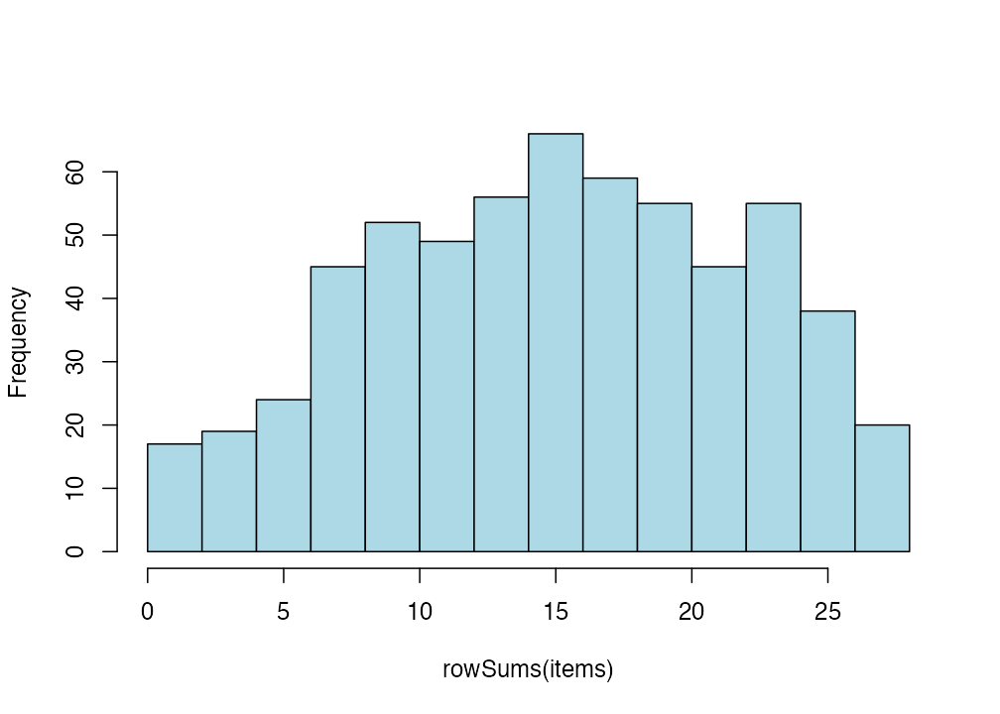
Figure 1. Histogram of ordinal sum scores
RMplotBar(items, ncol = 2)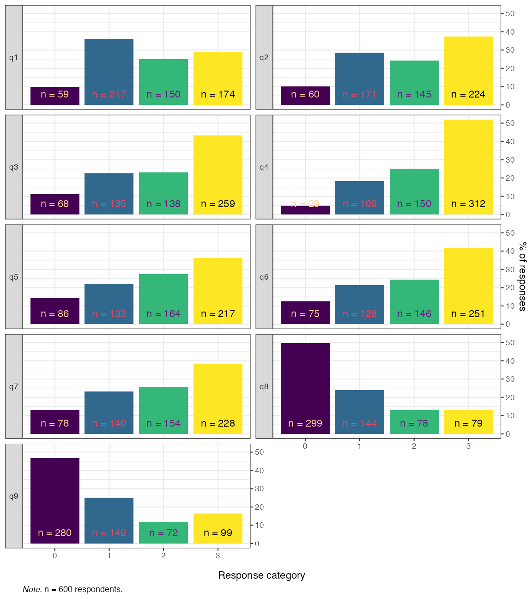
Figure 2. Faceted bar chart of response distributions
RMplotTile(items, category_labels = item_resp)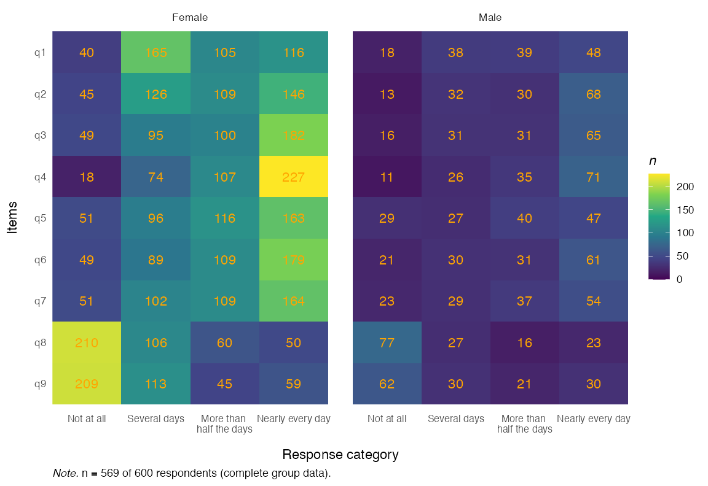
Figure 3. Response distribution tile plot
RMplotStackedbar(items, show_percent = TRUE)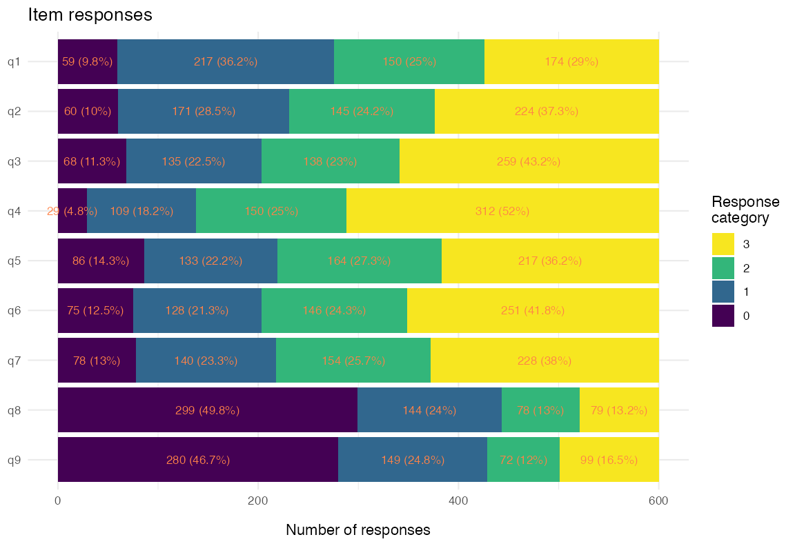
Figure 4. Stacked-bar response distribution
1. Unidimensionality
easyRasch2 provides several complementary
unidimensionality diagnostics that can be combined for a robust
conclusion:
- item-level conditional infit MSQ statistics (Müller 2020)
- item-level item-restscore associations with Goodman-Kruskal’s gamma (Kreiner 2011)
- confirmatory factor analysis (CFA) with WLSMV estimator for ordinal data
- principal components analysis (PCA) of the standardised residuals (Chou and Wang 2010)
- Martin-Löf test with Monte-Carlo p-values (Christensen and Kreiner 2007)
Conditional infit MSQ
Conditional item infit mean-square statistics flag items whose
response patterns deviate from the Rasch expectation. With
RMitemInfitCutoff(), per-item highest-density intervals
serve as the reference instead rule-of-thumb cutoffs (Johansson
2025).
infit_cut <- RMitemInfitCutoff(items, iterations = 100, parallel = FALSE,
seed = 3)
RMitemInfit(items, cutoff = infit_cut)| Item | Infit MSQ | Infit low | Infit high | Flagged | Relative location |
|---|---|---|---|---|---|
| q1 | 0.946 | 0.891 | 1.125 | FALSE | -0.58 |
| q2 | 0.778 | 0.887 | 1.157 | TRUE | -0.78 |
| q3 | 1.234 | 0.854 | 1.199 | TRUE | -0.85 |
| q4 | 0.835 | 0.793 | 1.156 | FALSE | -1.51 |
| q5 | 1.069 | 0.894 | 1.119 | FALSE | -0.60 |
| q6 | 0.895 | 0.858 | 1.090 | FALSE | -0.78 |
| q7 | 0.986 | 0.843 | 1.170 | FALSE | -0.68 |
| q8 | 1.260 | 0.835 | 1.198 | TRUE | 0.95 |
| q9 | 1.315 | 0.832 | 1.136 | TRUE | 0.77 |
You can also get a plot summarizing simulated and observed item
infit, using RMitemInfitCutoffPlot(). Since conditional
infit needs complete data, there is a sibling function that uses
multiple imputation with infit that is useful if you have partial
missingness in your data - RMitemInfitMI() and
RMitemInfitCutoffMI().
It is important to note that the RIitemfit() function
uses conditional infit, which is both robust to
different sample sizes and makes ZSTD unnecessary (Müller
2020). Müller also questions the usefulness of outfit, and my
simulation study (Johansson 2025) reached
the same conclusion. Thus, outfit is not reported unless requested.
A low item fit value, often referred to as an item being “overfit” to the Rasch model, indicates that responses may be too predictable. This is often the case for items that are very general/broad in scope in relation to the latent variable, for instance asking about feeling depressed in a depression questionnaire. You will often find overfitting items to also have residual correlations (local dependencies) with other items. Overfit may be likened to having a much stronger factor loading than other items in a confirmatory factor analysis or a higher level of discrimination in an Item Response Theory model with two or more parameters.
A high item fit value, often referred to as being “underfit” to the Rasch model, can indicate several things. Often underfit is due to multidimensionality or a question that is difficult to interpret and thus has noisy response data. The latter could for instance be caused by a question that asks about two things at the same time, or is ambiguous for other reasons.
Next is a visual presentation of conditional item fit across the latent continuum, with respondents split into groups based on their total score.
RMitemICCPlot(items, class_intervals = 5)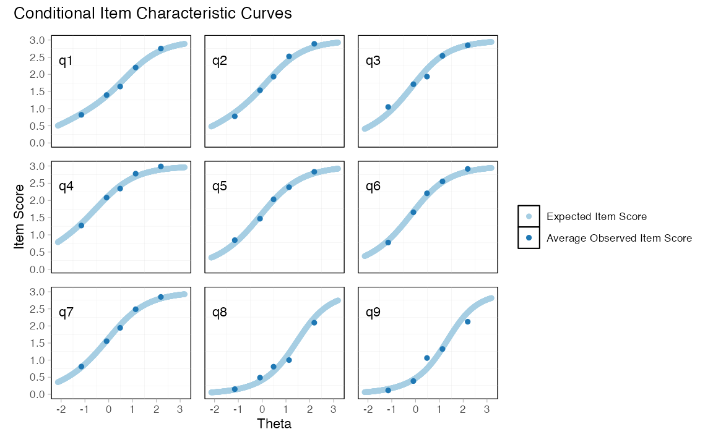
Figure 5. Conditional ICCs with five class intervals
Item-restscore
Item-restscore uses Goodman-Kruskal’s gamma and shows the expected and observed correlation between an item and a score based on the rest of the items (Kreiner 2011). Similarly, but inverted, to item infit, a lower observed correlation value than expected indicates underfit, that the item may not belong to the dimension. A higher than expected observed value indicates an overfitting and possibly redundant item. Overfitting items will often also show issues with local dependency.
Compared to infit, item-restscore more often flags overfit items (based on experience), and less often flags underfit items (based on a simulation study (Johansson 2025)).
RMitemRestscore(items)| Item | Observed value | Expected value | Difference | Adj. p-value (BH) | p-value sign. | Location | Rel. location |
|---|---|---|---|---|---|---|---|
| q1 | 0.66 | 0.62 | 0.04 | 0.210 | 0.17 | -0.58 | |
| q2 | 0.72 | 0.62 | 0.10 | 0.000 | *** | -0.04 | -0.78 |
| q3 | 0.57 | 0.63 | -0.06 | 0.085 | . | -0.11 | -0.85 |
| q4 | 0.71 | 0.62 | 0.09 | 0.000 | *** | -0.76 | -1.51 |
| q5 | 0.62 | 0.62 | 0.00 | 0.968 | 0.14 | -0.60 | |
| q6 | 0.69 | 0.63 | 0.06 | 0.021 | * | -0.04 | -0.78 |
| q7 | 0.64 | 0.62 | 0.02 | 0.476 | 0.06 | -0.68 | |
| q8 | 0.55 | 0.63 | -0.08 | 0.021 | * | 1.70 | 0.95 |
| q9 | 0.59 | 0.64 | -0.05 | 0.151 | 1.51 | 0.77 |
CFA-based cutoff for CFI / RMSEA
RMdimCFACutoff() fits a unidimensional ordinal CFA both
to the observed data and to data simulated from a unidimensional PCM,
and returns parametric-bootstrap cut-offs for model fit indices SRMR,
CFI and RMSEA. Model fit values that exceed the simulated cut-off values
are more extreme than is plausible under a unidimensional data
generating process.
cfa_cut <- RMdimCFACutoff(items, iterations = 100, parallel = FALSE,
seed = 2)
cfa_cut| Index | Observed | Cutoff | Direction | Flagged |
|---|---|---|---|---|
| CFI | 0.9623 | 0.9977 | < 1st pct | TRUE |
| RMSEA | 0.1217 | 0.0377 | > 99th pct | TRUE |
| SRMR | 0.0572 | 0.0230 | > 99th pct | TRUE |
Results can also be plotted using
RMdimCFAPlot(cfa_cut).
Residual PCA
After fitting the Rasch model, the residuals should contain no further systematic structure. The largest eigenvalue of the residual correlation matrix can be considered the headline diagnostic; a value clearly above the simulation-based cut-off suggest a secondary dimension. However, an eigenvalue below the largest value does not by itself support unidimensionality.
pca_cut <- RMdimResidualPCACutoff(items, iterations = 100, parallel = FALSE,
seed = 1)
RMdimResidualPCA(items, cutoff = pca_cut)| Component | Eigenvalue | Proportion of variance | Flagged |
|---|---|---|---|
| PC1 | 1.652 | 0.200 | TRUE |
| PC2 | 1.453 | 0.176 | TRUE |
| PC3 | 1.220 | 0.148 | FALSE |
| PC4 | 0.988 | 0.120 | FALSE |
| PC5 | 0.930 | 0.113 | FALSE |
Also of interest is the plot of item standardised loadings on the first residual contrast and item locations. This figure can be helpful to identify clusters in data, perhaps related to local dependency and/or multidimensionality.
RMdimResidualPCA(items, output = "loadings")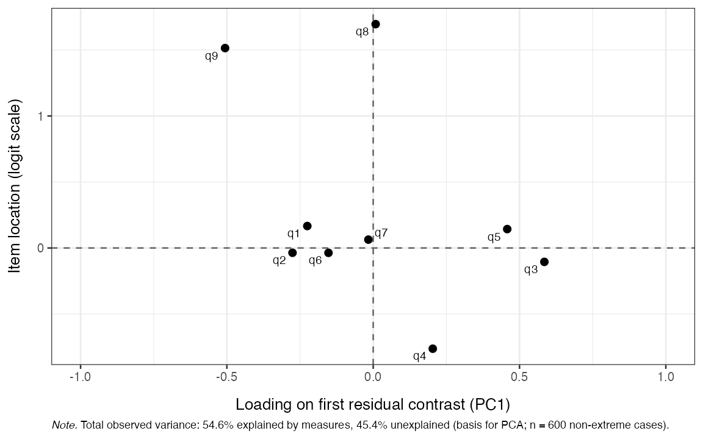
Figure 6. Standardised loadings on the first residual contrast
2. Local independence
Local independence (LD) can be assessed with multiple methods. Yen’s Q_3 statistic (Yen 1984) is the correlation between person-item standardised residuals for every item pair. Pair-wise Q_3 values above the simulation-based cut-off flag LD (Christensen et al. 2017).
q3_cut <- RMlocdepQ3Cutoff(items, iterations = 100, parallel = FALSE,
seed = 4)
RMlocdepQ3(items, cutoff = q3_cut)| q1 | q2 | q3 | q4 | q5 | q6 | q7 | q8 | q9 | above_cutoff | |
|---|---|---|---|---|---|---|---|---|---|---|
| q1 | ||||||||||
| q2 | 0.25 | * | ||||||||
| q3 | -0.19 | -0.2 | ||||||||
| q4 | 0 | -0.04 | 0.07 | * | ||||||
| q5 | -0.21 | -0.28 | 0.07 | 0 | * | |||||
| q6 | -0.18 | 0.04 | -0.2 | -0.16 | -0.13 | * | ||||
| q7 | -0.13 | -0.2 | -0.22 | -0.09 | -0.14 | -0.05 | ||||
| q8 | -0.17 | -0.3 | -0.17 | -0.15 | -0.09 | -0.17 | 0.07 | * | ||
| q9 | -0.14 | 0.06 | -0.23 | -0.28 | -0.24 | 0.01 | -0.18 | -0.12 | * |
For a more powerful Q_3 test, one can use the simulated cutoffs object to plot the expected range of residual correlations for each item-pair and compare with the observed value. We’ll limit the output to the 6 item-pairs that deviate the most.
RMlocdepQ3Plot(simfit = q3_cut, data = items, n_pairs = 6)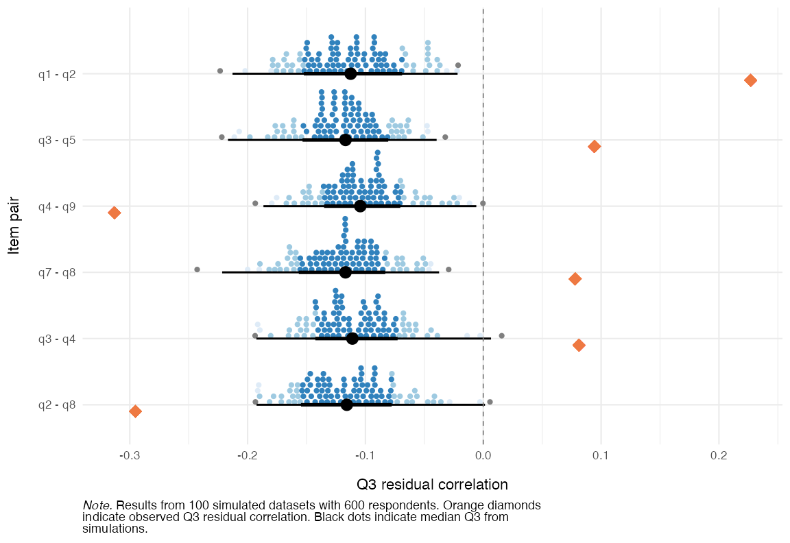
Figure 7. Observed and expected Q3 residuals
A second perspective on LD is the partial gamma coefficient (Kreiner and Christensen 2004; Kreiner 2007) between observed item pairs, conditional on the rest-score. Note that this function evaluates both directions of LD, thus the output is two tables. We’ll restrict the output to the 6 item-pairs with largest LD deviations.
RMlocdepGamma(items, n_pairs = 6)| Item 1 | Item 2 | Partial gamma | Adj. p-value (BH) | p-value sign. |
|---|---|---|---|---|
| q1 | q2 | 0.531 | 0.000 | *** |
| q4 | q9 | -0.381 | 0.000 | *** |
| q2 | q9 | 0.332 | 0.001 | *** |
| q2 | q8 | -0.323 | 0.001 | *** |
| q7 | q8 | 0.303 | 0.001 | *** |
| q6 | q9 | 0.287 | 0.009 | ** |
| Item 1 | Item 2 | Partial gamma | Adj. p-value (BH) | p-value sign. |
|---|---|---|---|---|
| q2 | q1 | 0.577 | 0.000 | *** |
| q9 | q4 | -0.453 | 0.000 | *** |
| q8 | q2 | -0.415 | 0.000 | *** |
| q4 | q3 | 0.361 | 0.000 | *** |
| q5 | q3 | 0.303 | 0.000 | *** |
| q9 | q2 | 0.291 | 0.007 | ** |
You can also get simulation-based thresholds for partial gamma LD,
using RMlocdepGammaCutoff(), which can be used with
RMlocdepGamma() and also to plot the results with
RMlocdepGammaPlot()
Item pairs flagged by both Q_3 and partial gamma are the strongest candidates for further inspection or possible item revision.
3. Ordered response category thresholds
For a polytomous item to be measuring as intended, the thresholds separating adjacent response categories should be ordered: the threshold from “Not at all” to “Several days” should sit below the one from “Several days” to “More than half the days”, and so on.
A classical method to assess item response functions is to plot probability of response curves for each item and response category.
RMitemCatProb(items, category_labels = item_resp)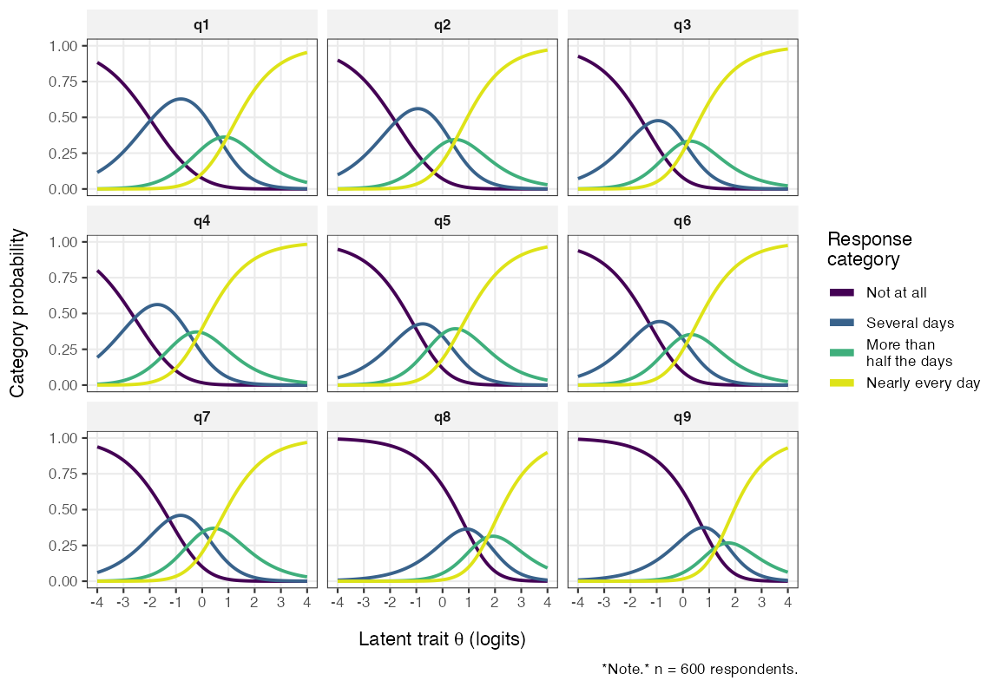
Figure 8. Item Probability Function curves
RMitemHierarchy() plots each item’s threshold locations
on the latent scale, ordered by overall item difficulty. Disordered
thresholds appear as overlapping or reversed segments and are a clear
signal that the response categories are not being used in the intended
order.
RMitemHierarchy(items, item_labels = item_desc)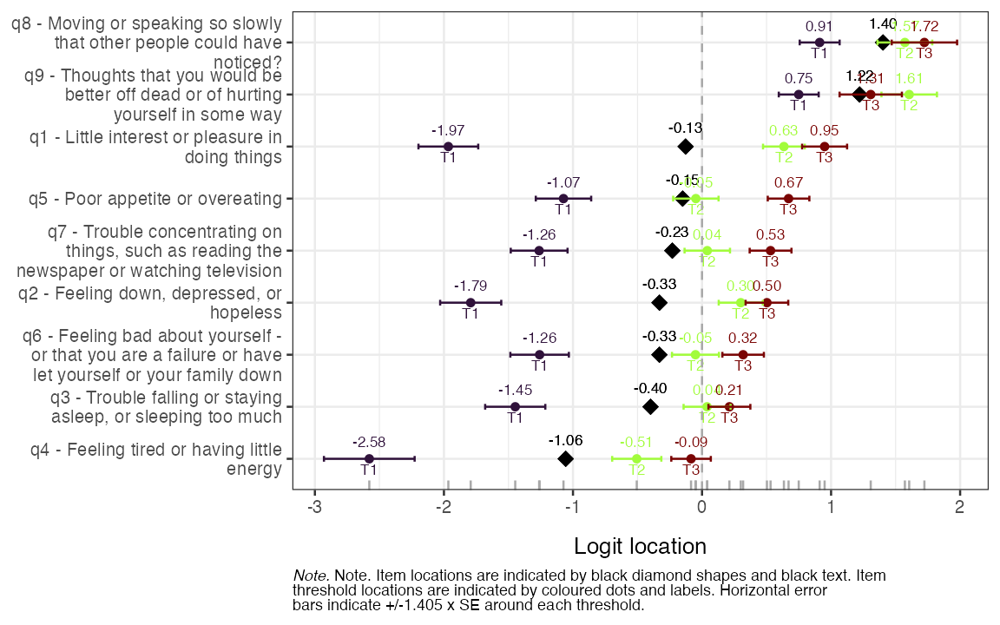
Figure 9. Item-hierarchy
4. Invariance / no DIF
We use two complementary DIF assessments. The Andersen likelihood-ratio test (LRT, Andersen 1973) partitions the sample by an external variable, refits the model in each subgroup, and compares item locations. The partial gamma approach (Kreiner 2007; Christensen et al. 2021) looks for an association between item responses and the external variable conditional on the rest-score. Both are run on the gender variable here (after dropping respondents with missing gender):
keep <- !is.na(gender)
items_g <- items[keep, ]
gender_g <- droplevels(gender[keep])Andersen LR-test (eRm)
RMdifLR(items_g, dif_var = gender_g, level = "threshold")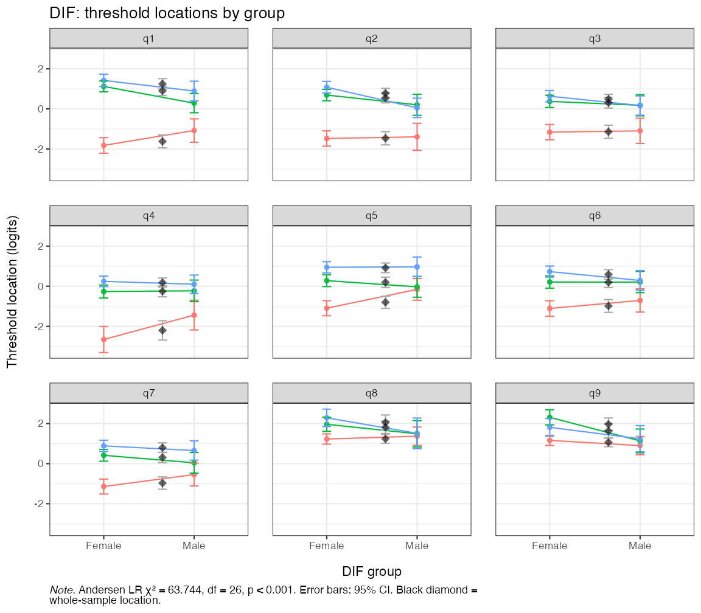
Figure 10. Andersen LR-test DIF locations by gender
The plot shows the item threshold locations estimated in each gender group with the corresponding confidence band.
Partial-gamma DIF
RMdifGamma(items_g, dif_var = gender_g)| Item | Partial gamma | SE | Lower CI | Upper CI | Adj. p-value (BH) | p-value sign. |
|---|---|---|---|---|---|---|
| q1 | 0.251 | 0.104 | 0.046 | 0.456 | 0.148 | |
| q2 | 0.411 | 0.094 | 0.227 | 0.595 | 0.000 | *** |
| q3 | 0.064 | 0.103 | -0.138 | 0.266 | 1.000 | |
| q4 | -0.092 | 0.114 | -0.315 | 0.131 | 1.000 | |
| q5 | -0.286 | 0.092 | -0.467 | -0.104 | 0.018 | * |
| q6 | -0.155 | 0.105 | -0.361 | 0.050 | 1.000 | |
| q7 | -0.075 | 0.102 | -0.275 | 0.126 | 1.000 | |
| q8 | -0.112 | 0.102 | -0.311 | 0.088 | 1.000 | |
| q9 | 0.180 | 0.100 | -0.015 | 0.376 | 0.638 |
For a model-based DIF analysis that can handle continuous
covariates and interactions (e.g. age × gender), see
?RMdifTree (Strobl et al. 2015; Henninger et al.
2025).
Targeting
A targeting plot summarises how well the item-threshold distribution matches the distribution of person locations on the latent scale — a Wright-map style display.
RMtargeting(items)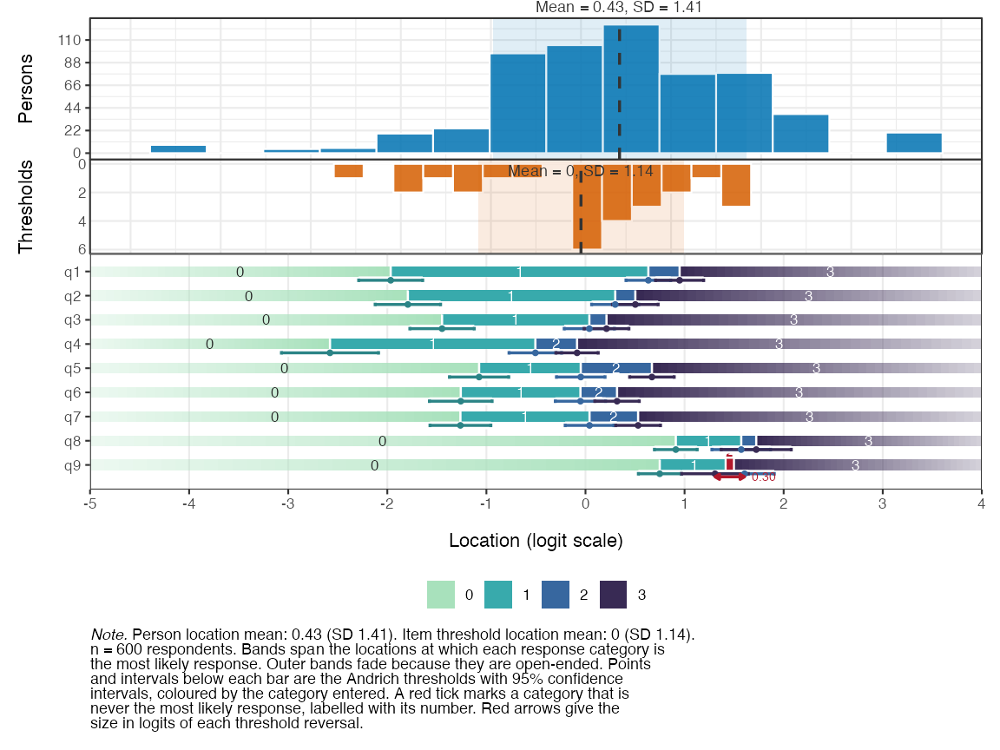
Figure 11. Person-item targeting
Reliability
RMreliability() reports four reliability metrics: person
separation reliability (PSI); Relative Measurement Uncertainty (RMU)
estimate derived from posterior person-location uncertainty using
plausible values; Cronbach’s alpha; and Empirical reliability (using
mirt::empirical_rxx(). PSI, alpha and empirical can use
bootstrap for confidence intervals. All reliability metrics range from 0
to 1, with higher values indicating better separation/precision.
RMreliability(items, draws = 200, rmu_iter = 20, parallel = FALSE,
seed = 5)| Metric | Estimate | Lower (95% HDCI) | Upper (95% HDCI) | Notes |
|---|---|---|---|---|
| Cronbach’s alpha | 0.886 | NA | NA | no bootstrap |
| PSI | 0.847 | NA | NA | no bootstrap |
| Empirical (WLE) | 0.872 | NA | NA | no bootstrap |
| RMU (WLE) | 0.882 | 0.867 | 0.897 | 200 PVs, 20 RMU iterations |
For converting ordinal sum-scores to interval-scaled person-location
estimates with associated standard errors, use
RMscoreSE().
RMscoreSE(items, output = "ggplot")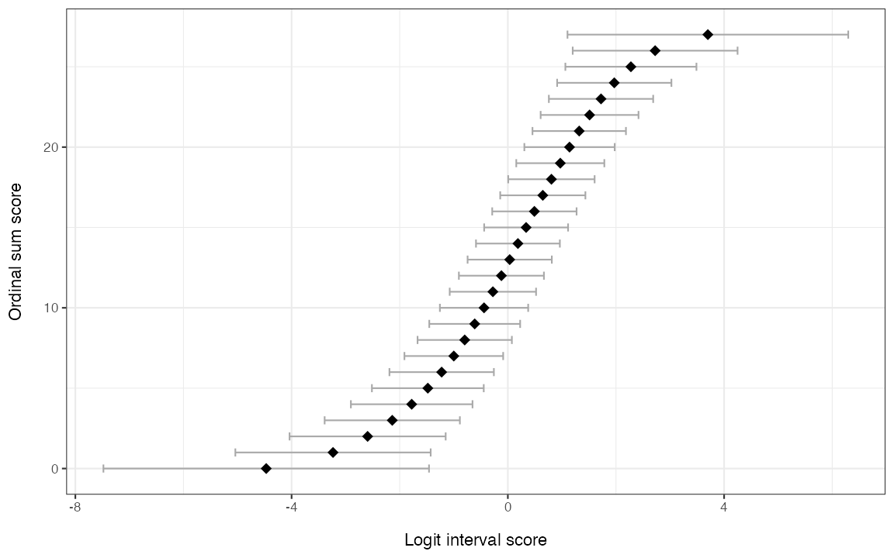
Figure 12. Sum-score to WLE conversion with 95% CIs
RMscoreSE(items)| Ordinal sum score | Logit score | Logit std.error |
|---|---|---|
| 0 | -4.469 | 0.682 |
| 1 | -3.234 | 0.815 |
| 2 | -2.594 | 0.748 |
| 3 | -2.138 | 0.661 |
| 4 | -1.779 | 0.592 |
| 5 | -1.480 | 0.540 |
| 6 | -1.224 | 0.502 |
| 7 | -1.000 | 0.473 |
| 8 | -0.798 | 0.450 |
| 9 | -0.613 | 0.433 |
| 10 | -0.440 | 0.420 |
| 11 | -0.277 | 0.410 |
| 12 | -0.119 | 0.403 |
| 13 | 0.034 | 0.398 |
| 14 | 0.186 | 0.396 |
| 15 | 0.338 | 0.396 |
| 16 | 0.491 | 0.398 |
| 17 | 0.647 | 0.402 |
| 18 | 0.806 | 0.408 |
| 19 | 0.970 | 0.417 |
| 20 | 1.141 | 0.431 |
| 21 | 1.320 | 0.450 |
| 22 | 1.512 | 0.478 |
| 23 | 1.723 | 0.516 |
| 24 | 1.968 | 0.565 |
| 25 | 2.276 | 0.620 |
| 26 | 2.724 | 0.659 |
| 27 | 3.700 | 0.567 |
RMscoreSE() also has an option for EAP scores (expected
á posteriori).
Where to next
- Each
RM*()function is documented with its own?functionreference page including a worked example. - The simulation-based cut-offs used above (
RM*cutoff()) can be parallelised on multiple CPU cores via themiraipackage; see the relevant help pages.- For a progress bar on time-consuming simulations, add
verbose = TRUEto the function call. This should not be used when rendering Quarto/Rmd files.
- For a progress bar on time-consuming simulations, add